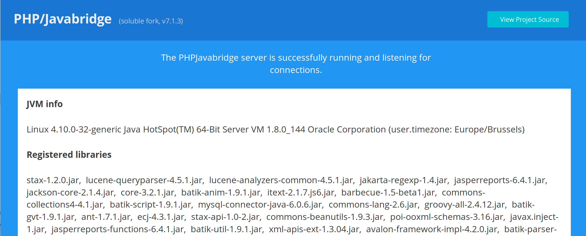

Installation
PHP¶
$ composer require soluble/jasper
Jasper server¶
Creating the war file¶
# Example based on php-java-bridge master $ git clone https://github.com/belgattitude/php-java-bridge.git $ cd php-java-bridge $ ./gradlew war -I init-scripts/init.jasperreports.gradle -I init-scripts/init.mysql.gradle
Deploy¶
Deploy on Tomcat (example on ubuntu)
$ sudo cp ./build/libs/JavaBridgeTemplate.war /var/lib/tomcat8/webapps/JasperReports.war
Check the bridge¶
Point your browser to http://localhost:8080/JasperReports, you should see the php-java-bridge dashboard page.

Test¶
The bridge address can be used in the japha bridge adapter:
<?php declare(strict_types=1); use Soluble\Japha\Bridge\Adapter; $ba = new Adapter([ 'driver' => 'Pjb62', 'servlet_address' => 'localhost:8080/JasperReports/servlet.phpjavabridge' ]); // This should print your JVM version echo $ba->javaClass('java.lang.System')->getProperty('java.version');